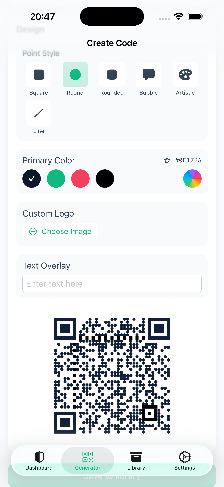

Ge koden din prägel
Välj egna färger, punktstilar och logotyp. För din Wi-Fi-skylt, ditt kontaktkort eller din nästa aktivitet.
Gör Wi-Fi-koden till en del av din verksamhet. Skapa kontaktkort och länkar i dina färger, med din logotyp — direkt på din iPhone eller iPad.
Börja gratis. Uppgradera till Pro i appen med ett engångsköp.

Välj egna färger, punktstilar och logotyp. För din Wi-Fi-skylt, ditt kontaktkort eller din nästa aktivitet.
Skanna med kameran, importera koder och spara fler än gratisversionens fem koder.
Skanning, generering och lokal lagring fungerar offline. Inga SDK:er för reklam, analys eller spårning.
| Funktion | Gratis | Pro |
|---|---|---|
| Skapa QR-koder för länkar, text, Wi-Fi och kontaktkort | Ja | Ja |
| Sparade koder | Upp till 5 | Fler än 5 |
| Kameraskanning och import | Ingår inte | Ingår |
| Egna färger, punktstilar och logotyp | Ingår inte | Ingår |
| Åtkomstkontroller för koder | Ingår inte | Ingår |
Pro köps en gång i appen. Ingen prenumeration. Det aktuella priset i din region visas av Apple före köpet.
Hämta i App StoreDu kan skapa och spara upp till fem QR-koder för webbadresser, text, Wi-Fi och kontaktkort. Skanning och egen design ingår i Pro.
QR-verktygen fungerar lokalt. Köp, återställning och uppdatering av Pro-rättigheter kan kräva internet via Apple. Att öppna en länk eller dela till en extern tjänst kan också använda nätet.
Nej. Alla som skannar en delad bild kan läsa dess innehåll. Kodlås, Kill Switch och utgångsdatum gäller bara inne i PrivacyQR och återkallar inte bilder som redan delats, skrivits ut eller fotograferats.
Hämta PrivacyQR och börja skapa gratis. Du väljer själv om du vill uppgradera till Pro.
Hämta i App Store